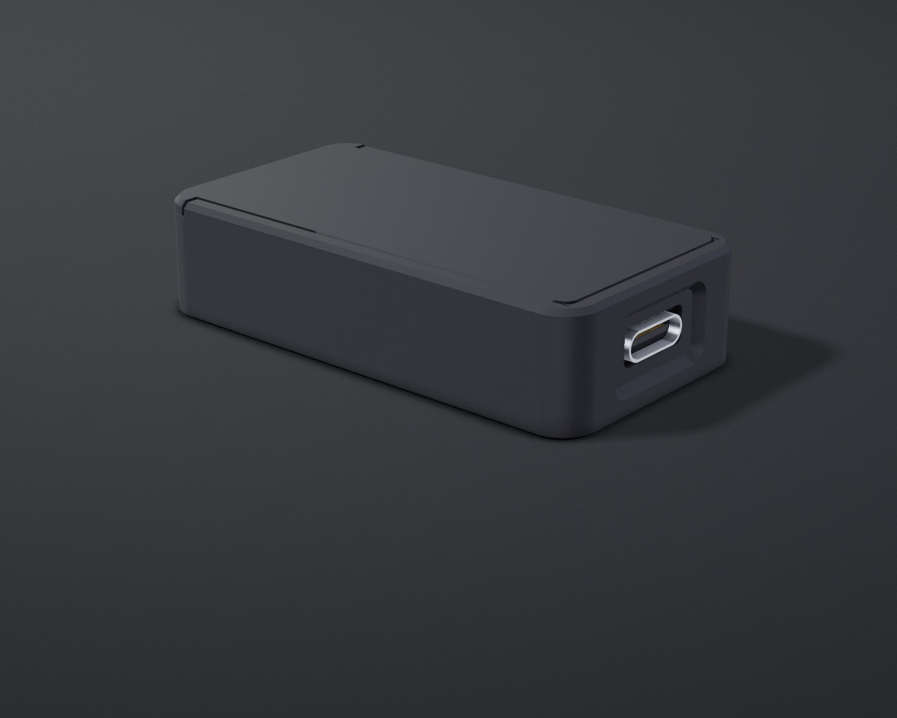

campaigns.
everybody at the gym guesses. we count.
nothing here depends on our own followers. every campaign travels on its own: people film themselves, tag a friend, recruit their gym mates, or the gym floor does it for us.
the first twelve weeks. each bar is a campaign; the ones that never stop keep running after week twelve.
rep amnesia.
weeks 1 to 3, the launcheveryone loses count at six. we prove it on camera, at the machine, with the member's own guess.
what people do
- a member says how many reps they think they did.
- the box shows the real number. a friend films the reveal: "i said ten. the box: seven."
- they post it and tag the friend who always rounds up.
- best reveal of the week wins a month at the gym.
how it travels
members' own accounts and the friends they tag; five Brno gym creators seeded in week one; the gym's own account reposts; the TV on the floor shows "guessed vs counted" live.
what we make
- the reveal template (9:16, for CapCut)
- three seed reels with creators
- a "guessed vs counted" board for the gym TV
- sticker: "i lost count at six."
- a poster at the leg press
timeline
how we know it worked


| guessed | counted | |
|---|---|---|
| leg press | 10 | 7 |
| chest press | 12 | 12 |
| lat pulldown | 10 | 8 |
ten rats.
weeks 4 to 10ten members from one gym sign up, and we call the owner. the members bring the box to their gym.
what people do
- each gym gets a page with ten dots.
- every member who signs up fills a dot and gets a black and white portrait: "rat no. 7."
- at ten, we call the owner with a free pilot.
how it travels
members post their own portrait; the gym's dots page goes round the gym's group chats; gyms in Brno see each other's dots fill up.
what we make
- a dots page per gym
- the portrait template (B&W, a subtitle)
- the call script for owners
- the owner deck
timeline
how we know it worked


felt like ten.
always on, twice a weeka split screen: what the set felt like, and what the box counted. a template anyone can remix.
what people do
- film one set.
- left: "felt like: ten." right: "the box: seven."
- post with the template from our bio.
how it travels
members remix it; every Friday we repost the best three; it lives on as a meme, not an ad.
what we make
- one remix template
- two posts a week from real sets
timeline
how we know it worked
 felt like: ten.
felt like: ten.trainer math.
weeks 6 to 12trainers count in their own units: "two minutes" lasts eleven. the trainers become the heroes, and they bring their clients.
what people do
- a trainer gets the trainer app free.
- they post "trainer math" reels with their clients' real numbers (with consent).
- clients join the app to be in the next one.
how it travels
ten Brno trainers' own accounts and their clients; trainers tag the gym.
what we make
- the trainer kit: the app, three reel ideas, a caption sheet
- "trainer math" cards
timeline
how we know it worked

fifteen boxes, one printer.
every week, on LinkedIn and in storieswe build the boxes in front of everyone, misprints included. one honest number a week.
what people do
- every Friday: one number (boxes printed, reps counted at FitPods), one photo from the bench, one thing we got wrong.
how it travels
LinkedIn (gym owners, founders, investors), the Brno startup scene, local press.
what we make
- a weekly post with a bench photo
- a monthly recap
timeline
how we know it worked
fifteen boxes, one printer.
week 6: 14 boxes printed, 2 misprints, 18,240 reps counted at FitPods. we got the lid wrong twice. here is the third one.
